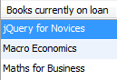
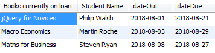
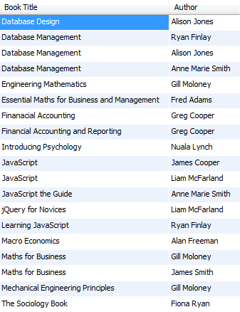
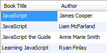
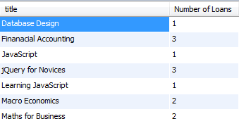
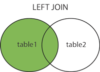
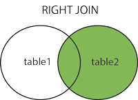
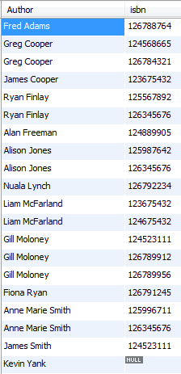

In this lab, we will use the Select statement statement to look at multi table and outer Joins.
Sometimes we need to retrieve information from more than two tables. The rule goes that the number of JOINs a Select statement has is 1 less than the number of tables involved. So if we have three tables in the query then we have two JOINs, if we have four tables in the query then we would have 3 JOINs and so on.
For each loan, if we wanted the student's name who borrowed the book, the ISBN of the book borrowed, and the dates loaned and returned.
There are three things to do here:
select concat(fname,' ',lname) as Name, isbn, dateOut, dateBack
from bookcopy join loan
on bookcopy.copyId = loan.copyId
join student
on loan.studentId = student.studentId;The previous example gives us some information about the book loans per student but we still do not know the book title!
We can expand the above example to return the book title instead of the ISBN.
For each loan, we want the student's name who borrowed the book, the title of the book borrowed, and the dates loaned and returned.
There are three things to do here:
select concat(fname,' ',lname) Name, title, dateOut, dateBack
from bookcopy join book
on bookcopy.isbn = book.isbn
join loan
on bookcopy.copyId = loan.copyId
join student
on student.studentId = loan.studentId;List the books by title that are on loan at present (dateBack is null). Label the title Books currently on loan. Sort in alphabetical order by title.

List the books by title that are on loan at present, the student by name who borrowed the book, the date the book was borrowed and the date the book was due back. Label the title Books currently on loan and label the student name Student Name. Sort in alphabetical order by title.

List the titles and authors by name for all books. Label the title Book Title and label the author name Author. Sort in alphabetical order of title and then last name.

List the titles and authors by name for all books that have JavaScript in the title. Label the title Book Title and label the author name Author. Sort in alphabetical order of title and then last name.

Return the number of loans per book title. Output the count with the label Number of Loans.

For these exercises, load the movies database and remember to select the database.
To do:
For each rating retrieve the reviewer name, film title, number of stars, and date of rating.
Return the film titles of the films reviewed by Chris Jackson.
Please enter the following statement which returns all Student records:
SELECT * FROM student;Now, enter the following statement which returns all Loan records:
SELECT * FROM loan;If you look at the loan data, not all of the students have taken a book loan (as yet).
Now, say we want to produce a query which lists all students and their loan details (if they have any). The query would be as follows: `
SELECT concat(fname,' ', lname) as 'Name', copyId
FROM student JOIN loan
ON student.studentid = loan.studentid;This will return the same number of records as the previous statement (SELECT * FROM loan;)
As you can see a JOIN SELECT will only show the student record if it has a loan. But, how can we return all student records and their loans even if they have NO loan record associated? We must use a LEFT or RIGHT OUTER JOIN.
An outer join extends the result of a simple join. An outer join returns all rows that satisfy the join condition and also returns some or all of those rows from one table for which no rows from the other satisfy the join condition.
The LEFT JOIN keyword returns all rows from the left (first) table (table1), with the matching rows in the right table (table2). The result is NULL in the right side when there is no match.
Syntax:
SELECT column_name(s)
FROM table1
LEFT JOIN table2
ON table1.column_name=table2.column_name;
Here is the previous example written with the LEFT OUTER JOIN syntax:
SELECT *
FROM student LEFT JOIN loan
ON student.studentid = loan.studentid;Execute the statement. Do you see all the null values?
A more realistic SELECT would be:
SELECT concat(fname,' ', lname) as 'Name', copyId
FROM student LEFT JOIN loan
ON student.studentid = loan.studentid;Notes:
The RIGHT JOIN keyword returns all rows from the right (second) table (table2), with the matching rows in the left table (table1). The result is NULL in the left side when there is no match.
Syntax:
SELECT column_name(s)
FROM table1
RIGHT JOIN table2
ON table1.column_name=table2.column_name;
Here is the previous example written with the RIGHT OUTER JOIN syntax:
SELECT concat(fname,' ', lname) as 'Name', copyId
FROM loan RIGHT JOIN student
ON student.studentid = loan.studentid;Note:

The following example produces for each bookcopy - the copyId, its' book title, the loan details (i.e. the date it was borrowed (if it was borrowed), and the date it was returned). This will require joining tables - bookcopy, loan and book.
SELECT bookcopy.copyId, title, dateOut, dateBack
FROM book JOIN bookcopy ON book.isbn = bookcopy.isbn
LEFT JOIN loan
ON bookcopy.copyId = loan.copyId;A bookcopy will appear more than once if it is loaned out more than once.
You can write is as follows using the RIGHT join:
SELECT bookcopy.copyId, title, dateOut, dateBack
FROM loan RIGHT JOIN bookcopy
ON bookcopy.copyId = loan.copyId
JOIN book ON book.isbn = bookcopy.isbn;The following example produces for each Student - the full student name, the title of the books borrowed, the date it was borrowed,
and the date it was returned even if the student has (or had) no loans.
As we saw previously we need the Book table to obtain the title column, but because it is not linked with the Loan table, we need BookCopy also. We can join these three tables together with an Equijoin, and then finally right join the Student table to include all students even if there is no match with the Loan table.
SELECT concat(fname,' ', lname) as 'Name', title, dateOut, dateBack
FROM book JOIN bookcopy ON book.isbn=bookcopy.isbn
JOIN loan ON bookcopy.copyid = loan.copyid
RIGHT JOIN student
ON student.studentid = loan.studentid;Another way of expressing the query (using LEFT join) is as follows:
SELECT concat(fname,' ', lname) as 'Name', title, dateOut, dateBack
FROM student LEFT JOIN loan
ON student.studentid = loan.studentid
LEFT JOIN bookcopy ON bookcopy.copyid = loan.copyid
LEFT JOIN book ON book.isbn=bookcopy.isbn;In this example, because we selected from the student table first, we now need to left join it with all the other tables to ensure that all students are included
as after the first join - loanId and copyId will have null values for students who have no loans AND in order to join these values with other tables we need an Outer
Join.
For these exercises, load the movies database, remember to select the database, and execute the following statement:
insert into reviewer values(209, 'Liam Collins');Solutions for the exercises in this lab are available here: